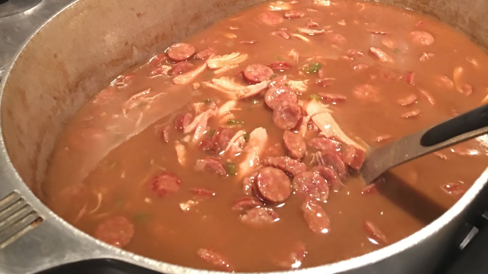

Gumbo
Perfect for those cold winter nights, this dish is one of, if not the most, popular dishes in Louisiana. Originally made my slaves just trying to have a decent meal, it has become a staple of the south.
Ingredients:
- 2/3 Cup Vegetable Oil
- 1 Cup All Purpose Flour
- 1 Yellow Onion
- 1 Green Bell Pepper
- 3 Sticks of Celery
- 4 Cloves of Garlic
- 2 lbs Smoked Sausage
- 2 Whole Rotisserie Chickens (deboned)
- 3 32oz Containers of Chicken Stock
- 4 Cups of Water
- 1 Tablespoon of Cajun or Creole Seasoning
- 1 Teaspoon Salt
- 1 Teaspoon Garlic Powder
- 3 Bay Leaves
- 1 Cold Bottle of Water at the end
- 1/4 teaspoon of cayenne if you want it spicy
Steps:
- Heat a large pot and over a Medium heat.
- Chop the Onion, Bell Pepper, Celery, and Garlic. Slice the sausage and pull apart the chicken. Save the remaining skin and bone in a bowl off to the side. Put all prepped ingredients in the refrigerator.
- In a pot off to the side, add the 3 containers of chicken stock, the skin and bone from the chicken, cover, and set to a low heat. Just let this simmer until needed.
- Add the 2/3 Cup of Vegetable Oil and the 1 Cup of Flour to the hot pot. Begin stirring regularly until you reach a chocolate color. Times will vary on how long it takes to get the roux to a chocolate color, but it usually takes over an hour.
- At about half way, begin heating a large pan over Medium heat. When your get to a caramel color, you want to begin draining the stock through a sifter. This way you can separate all the chicken remains from the stock. Add the stock back to the pot, cover, and let simmer.
- Once you’ve reached a good chocolate color, add the chopped vegetables in and cook for another 10 minutes.
- While the vegetables are cooking, begin searing your sausage in the pan off to the side, just to brown them a little.
- Once they have browned a little, add some of the chicken stock to that pan to loosen up any drippings from the sausage. Pour the liquid from the sauté pan through a sifter into the stock.
- After 10 minutes of cooking the vegetables, ladel in a little bit of the chicken stock into the roux and stir. Repeat until you get a creamy mixture, then add all of the stock in.
- Add the Cajun seasoning, Salt, Garlic Powder, Bay Leaves, Sausage, and 4 Cups of Water.
- Bring to a boil, cover, lower to a simmering heat, and cook for 1 hour
- After 1 hour, you can skim any oil that may have risen to the top, or you can leave it.
- Add the chicken, and simmer for another hour.
- At the end, turn the fire off, add the cold bottle of water and Serve.
- Don’t forget to cook some rice!
- THE COLD BOTTLE OF WATER WILL CAUSE A QUICK DROP IN TEMPERATURE ENHANCING THE FLAVORS IN THE GUMBO. INSTEAD OF ADDING ALL OF THE WATER TO THE GUMBO DURING SIMMERING, SAVE TWO CUPS FOR THE END AND ADD IT IN COLD.
A video to follow step by step can be found Here by the Cajun Ninja himself